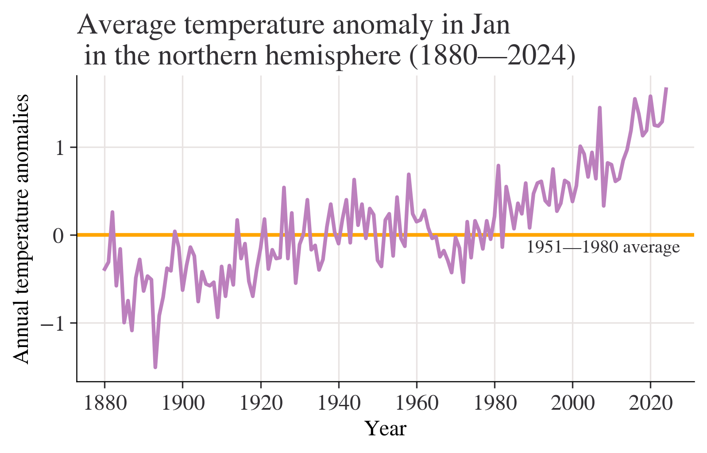
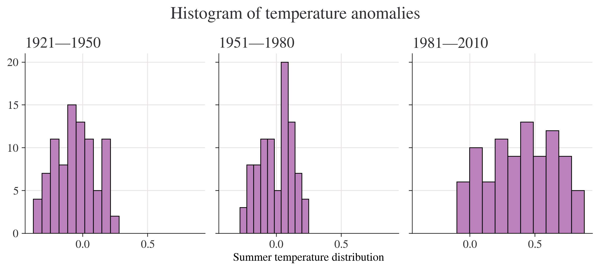

Requirement already satisfied: pandas in c:\users\hp\anaconda3\lib\site-packages (2.2.2)
Requirement already satisfied: matplotlib in c:\users\hp\anaconda3\lib\site-packages (3.9.2)
Requirement already satisfied: numpy in c:\users\hp\anaconda3\lib\site-packages (1.26.4)
Collecting lets_plot
Using cached lets_plot-4.5.1-cp312-cp312-win_amd64.whl.metadata (11 kB)
Requirement already satisfied: python-dateutil>=2.8.2 in c:\users\hp\anaconda3\lib\site-packages (from pandas) (2.9.0.post0)
Requirement already satisfied: pytz>=2020.1 in c:\users\hp\anaconda3\lib\site-packages (from pandas) (2024.1)
Requirement already satisfied: tzdata>=2022.7 in c:\users\hp\anaconda3\lib\site-packages (from pandas) (2023.3)
Requirement already satisfied: contourpy>=1.0.1 in c:\users\hp\anaconda3\lib\site-packages (from matplotlib) (1.2.0)
Requirement already satisfied: cycler>=0.10 in c:\users\hp\anaconda3\lib\site-packages (from matplotlib) (0.11.0)
Requirement already satisfied: fonttools>=4.22.0 in c:\users\hp\anaconda3\lib\site-packages (from matplotlib) (4.51.0)
Requirement already satisfied: kiwisolver>=1.3.1 in c:\users\hp\anaconda3\lib\site-packages (from matplotlib) (1.4.4)
Requirement already satisfied: packaging>=20.0 in c:\users\hp\anaconda3\lib\site-packages (from matplotlib) (24.1)
Requirement already satisfied: pillow>=8 in c:\users\hp\anaconda3\lib\site-packages (from matplotlib) (10.4.0)
Requirement already satisfied: pyparsing>=2.3.1 in c:\users\hp\anaconda3\lib\site-packages (from matplotlib) (3.1.2)
Collecting pypng (from lets_plot)
Using cached pypng-0.20220715.0-py3-none-any.whl.metadata (13 kB)
Collecting palettable (from lets_plot)
Using cached palettable-3.3.3-py2.py3-none-any.whl.metadata (3.3 kB)
Requirement already satisfied: six>=1.5 in c:\users\hp\anaconda3\lib\site-packages (from python-dateutil>=2.8.2->pandas) (1.16.0)
Using cached lets_plot-4.5.1-cp312-cp312-win_amd64.whl (3.1 MB)
Using cached palettable-3.3.3-py2.py3-none-any.whl (332 kB)
Using cached pypng-0.20220715.0-py3-none-any.whl (58 kB)
Installing collected packages: pypng, palettable, lets_plot
Successfully installed lets_plot-4.5.1 palettable-3.3.3 pypng-0.20220715.0
Note: you may need to restart the kernel to use updated packages.
In [19]:
import pandas as pdimport matplotlib as mplimport matplotlib.pyplot as pltimport numpy as npfrom pathlib import Pathfrom lets_plot import*LetsPlot.setup_html(no_js=True)plt.style.use("https://raw.githubusercontent.com/aeturrell/core_python/main/plot_style.txt")
1.Why have researchers chosen this particular measure over other measures (such as absolute temperature)?
Temperature anomalies indicate how much warmer or colder it is than normal for a particular place and time. For the GISS analysis, normal always means the average over the 30-year period 1951-1980 for that place and time of year. This base period is specific to GISS, not universal. But note that trends do not depend on the choice of the base period: If the absolute temperature at a specific location is 2 degrees higher than a year ago, so is the corresponding temperature anomaly, no matter what base period is selected, since the normal temperature used as base point (which is subtracted from the absolute temperature to get the anomaly) is the same for both years.
Note that regional mean anomalies (in particular global anomalies) are not computed from the current absolute mean and the 1951-80 mean for that region, but from station temperature anomalies. Finding absolute regional means encounters significant difficulties that create large uncertainties. This is why the GISS analysis deals with anomalies rather than absolute temperatures. For a more detailed discussion of that topic, please see “The Elusive Absolute Temperature”.
In [21]:
df.head()
Year
Jan
Feb
Mar
Apr
May
Jun
Jul
Aug
Sep
Oct
Nov
Dec
J-D
D-N
DJF
MAM
JJA
SON
0
1880
-0.39
-0.54
-0.24
-0.31
-0.06
-0.18
-0.22
-0.26
-0.25
-0.31
-0.44
-0.43
-0.30
NaN
NaN
-0.20
-0.22
-0.33
1
1881
-0.31
-0.25
-0.06
-0.02
0.05
-0.34
0.09
-0.06
-0.29
-0.45
-0.37
-0.23
-0.19
-0.20
-0.33
-0.01
-0.10
-0.37
2
1882
0.26
0.21
0.02
-0.30
-0.23
-0.29
-0.28
-0.15
-0.25
-0.52
-0.34
-0.69
-0.21
-0.18
0.08
-0.17
-0.24
-0.37
3
1883
-0.58
-0.66
-0.15
-0.30
-0.26
-0.12
-0.06
-0.23
-0.34
-0.17
-0.45
-0.15
-0.29
-0.33
-0.64
-0.24
-0.14
-0.32
4
1884
-0.16
-0.11
-0.64
-0.59
-0.36
-0.42
-0.41
-0.52
-0.45
-0.45
-0.58
-0.47
-0.43
-0.40
-0.14
-0.53
-0.45
-0.50
In [22]:
df.info()
<class 'pandas.core.frame.DataFrame'>
RangeIndex: 145 entries, 0 to 144
Data columns (total 19 columns):
# Column Non-Null Count Dtype
--- ------ -------------- -----
0 Year 145 non-null int64
1 Jan 145 non-null float64
2 Feb 145 non-null float64
3 Mar 145 non-null float64
4 Apr 145 non-null float64
5 May 145 non-null float64
6 Jun 145 non-null float64
7 Jul 145 non-null float64
8 Aug 145 non-null float64
9 Sep 145 non-null float64
10 Oct 144 non-null float64
11 Nov 144 non-null float64
12 Dec 144 non-null float64
13 J-D 144 non-null float64
14 D-N 143 non-null float64
15 DJF 144 non-null float64
16 MAM 145 non-null float64
17 JJA 145 non-null float64
18 SON 144 non-null float64
dtypes: float64(18), int64(1)
memory usage: 21.7 KB
month ="Jan"fig, ax = plt.subplots()ax.axhline(0, color="orange")ax.annotate("1951—1980 average", xy=(0.66, -0.2), xycoords=("figure fraction", "data"))df[month].plot(ax=ax)ax.set_title(f"Average temperature anomaly in {month}\n in the northern hemisphere (1880—{df.index.max()})")ax.set_ylabel("Annual temperature anomalies");

In [28]:
month ="J-D"fig, ax = plt.subplots()ax.axhline(0, color="orange")ax.annotate("1951—1980 average", xy=(0.68, -0.2), xycoords=("figure fraction", "data"))df[month].plot(ax=ax)ax.set_title(f"Average annual temperature anomaly in \n in the northern hemisphere (1880—{df.index.max()})")ax.set_ylabel("Annual temperature anomalies");
Year
2005 1981—2010
2006 1981—2010
2007 1981—2010
2008 1981—2010
2009 1981—2010
2010 1981—2010
2011 NaN
2012 NaN
2013 NaN
2014 NaN
2015 NaN
2016 NaN
2017 NaN
2018 NaN
2019 NaN
2020 NaN
2021 NaN
2022 NaN
2023 NaN
2024 NaN
Name: Period, dtype: category
Categories (3, object): ['1921—1950' < '1951—1980' < '1981—2010']
Year
1880 Jun -0.18
Jul -0.22
Aug -0.26
1881 Jun -0.34
Jul 0.09
dtype: float64
In [31]:
fig, axes = plt.subplots(ncols=3, figsize=(9, 4), sharex=True, sharey=True)for ax, period inzip(axes, df["Period"].dropna().unique()): df.loc[df["Period"] == period, list_of_months].stack().hist(ax=ax) ax.set_title(period)plt.suptitle("Histogram of temperature anomalies")axes[1].set_xlabel("Summer temperature distribution")plt.tight_layout();

In [32]:
# Create a variable that has years 1951 to 1980, and months Jan to Dec (inclusive)temp_all_months = df.loc[(df.index >=1951) & (df.index <=1980), "Jan":"Dec"]# Put all the data in stacked format and give the new columns sensible namestemp_all_months = ( temp_all_months.stack() .reset_index() .rename(columns={"level_1": "month", 0: "values"}))# Take a look at this data:temp_all_months
Year
month
values
0
1951
Jan
-0.36
1
1951
Feb
-0.51
2
1951
Mar
-0.19
3
1951
Apr
0.07
4
1951
May
0.17
...
...
...
...
355
1980
Aug
0.09
356
1980
Sep
0.10
357
1980
Oct
0.12
358
1980
Nov
0.20
359
1980
Dec
0.09
360 rows × 3 columns
In [33]:
quantiles = [0.3, 0.7]list_of_percentiles = np.quantile(temp_all_months["values"], q=quantiles)print(f"The cold threshold of {quantiles[0]*100}% is {list_of_percentiles[0]}")print(f"The hot threshold of {quantiles[1]*100}% is {list_of_percentiles[1]}")
The cold threshold of 30.0% is -0.1
The hot threshold of 70.0% is 0.1
In [34]:
# Create a variable that has years 1981 to 2010, and months Jan to Dec (inclusive)temp_all_months = df.loc[(df.index >=1981) & (df.index <=2010), "Jan":"Dec"]# Put all the data in stacked format and give the new columns sensible namestemp_all_months = ( temp_all_months.stack() .reset_index() .rename(columns={"level_1": "month", 0: "values"}))# Take a look at the start of this data data:temp_all_months.head()
Year
month
values
0
1981
Jan
0.79
1
1981
Feb
0.62
2
1981
Mar
0.68
3
1981
Apr
0.39
4
1981
May
0.18
In [35]:
entries_less_than_q30 = temp_all_months["values"] < list_of_percentiles[0]proportion_under_q30 = entries_less_than_q30.mean()print(f"The proportion under {list_of_percentiles[0]} is {proportion_under_q30*100:.2f}%")
The proportion under -0.1 is 1.94%
In [36]:
proportion_over_q70 = (temp_all_months["values"] > list_of_percentiles[1]).mean()print(f"The proportion over {list_of_percentiles[1]} is {proportion_over_q70*100:.2f}%")
The proportion over 0.1 is 84.72%
In [37]:
temp_all_months = ( df.loc[:, "DJF":"SON"] .stack() .reset_index() .rename(columns={"level_1": "Season", 0: "Values"}))temp_all_months["Period"] = pd.cut( temp_all_months["Year"], bins=[1921, 1950, 1980, 2010], labels=["1921—1950", "1951—1980", "1981—2010"], ordered=True,)# Take a look at a cut of the data using `.iloc`, which provides positiontemp_all_months.iloc[-135:-125]
C:\Users\HP\AppData\Local\Temp\ipykernel_19472\1563140002.py:1: FutureWarning: The default of observed=False is deprecated and will be changed to True in a future version of pandas. Pass observed=False to retain current behavior or observed=True to adopt the future default and silence this warning.
grp_mean_var = temp_all_months.groupby(["Season", "Period"])["Values"].agg(
C:\Users\HP\AppData\Local\Temp\ipykernel_19472\1563140002.py:1: FutureWarning: The provided callable <function mean at 0x00000240F30980E0> is currently using SeriesGroupBy.mean. In a future version of pandas, the provided callable will be used directly. To keep current behavior pass the string "mean" instead.
grp_mean_var = temp_all_months.groupby(["Season", "Period"])["Values"].agg(
C:\Users\HP\AppData\Local\Temp\ipykernel_19472\1563140002.py:1: FutureWarning: The provided callable <function var at 0x00000240F3098360> is currently using SeriesGroupBy.var. In a future version of pandas, the provided callable will be used directly. To keep current behavior pass the string "var" instead.
grp_mean_var = temp_all_months.groupby(["Season", "Period"])["Values"].agg(
mean
var
Season
Period
DJF
1921—1950
-0.027931
0.057703
1951—1980
-0.003333
0.050375
1981—2010
0.522000
0.078644
JJA
1921—1950
-0.054483
0.021611
1951—1980
0.001333
0.014640
1981—2010
0.399000
0.067775
MAM
1921—1950
-0.041724
0.031136
1951—1980
0.000333
0.025272
1981—2010
0.507667
0.075812
SON
1921—1950
0.081379
0.027798
1951—1980
-0.001333
0.026384
1981—2010
0.427000
0.110739
In [40]:
min_year =1880( ggplot(temp_all_months, aes(x="Year", y="Values", color="Season"))+ geom_abline(slope=0, color="black", size=1)+ geom_line(size=1)+ labs( title=f"Average annual temperature anomaly in \n in the northern hemisphere ({min_year}—{temp_all_months['Year'].max()})", y="Annual temperature anomalies", )+ scale_x_continuous(format="d")+ geom_text( x=min_year, y=0.1, label="1951—1980 average", hjust="left", color="black" ))